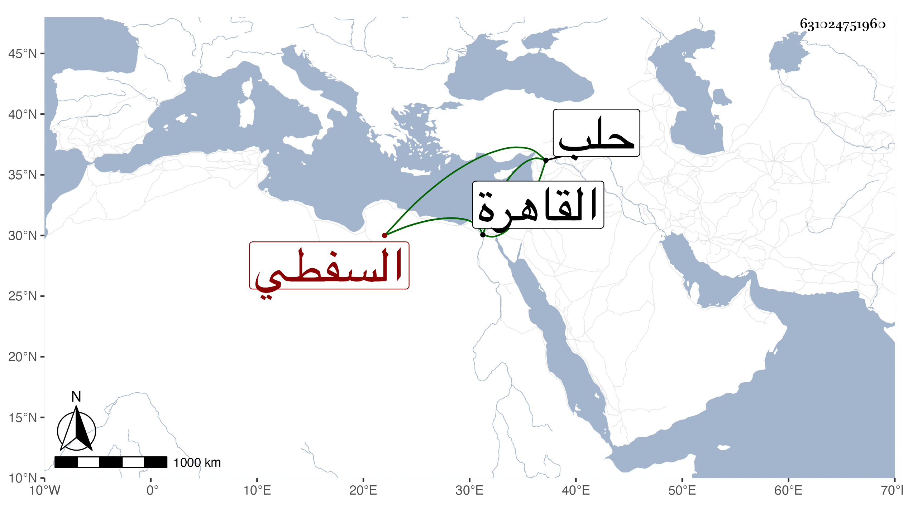

0902Sakhawi.DawLamic.ITO20230111-ara1.EIS1600.631024751960
Biography ID: 631024751960
43
ألف ابنة الولوي محمد بن أحمد بن يوسف بن حجاج السفطي أخت أحمد وخديجة تزوجها ابن الاخلاطي وكذا المحب بن الشحنة فولدت له عبد البر واخوته وكانت معه ببلدة ثم بالقاهرة وغيرها وحجت معه واستمرت تحته حتى مات وسافرت حينئذ مع ابنتها جويرية إلى حلب ثم عادت وماتت بالقاهرة في جمادى الثانية سنة ثلاث وتسعين .
